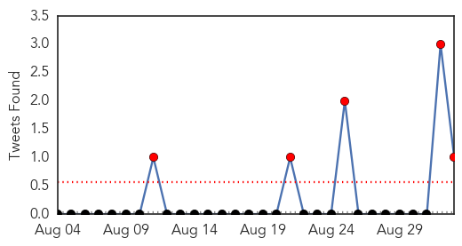
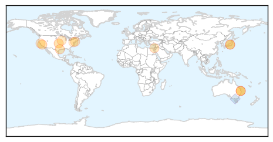
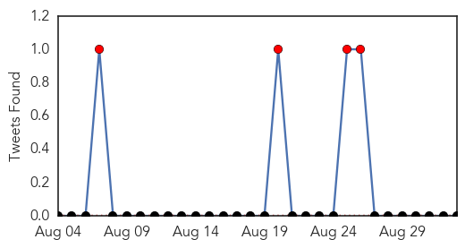
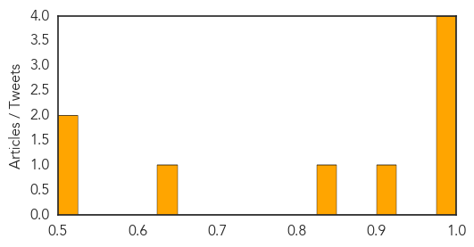

Influenza
30-Day Web Trend
0 alerts, 0 warnings

30-Day Twitter Trend
5 alerts, 0 warnings

Article Locations
Article Confidences

Top Articles:
- 0.980
- 18,000 Cases of ‘Brisbane Flu’ Reported In Past Three Weeks
- 0.970
- Strain comeback behind Qld horror flu year
- 0.915
- Encourage Flu Vaccine Early, Often, and Broadly
- 0.898
- Illawarra flu cases higher than normal
- 0.863
- Top 10 Causes of Death in the USA–It May Surprise You!
- 0.859
- Flu study, on hold, yields new vaccine technology
- 0.850
- Flu Study, On Hold, Yields New Vaccine Technology
- 0.751
- September 1, 2015 Archives
- 0.751
- September 1, 2015 Archives
- 0.751
- September 1, 2015 Archives
- 0.681
- Preparations Underway for Fall Bird Flu Outbreak amid Ongoing Mystery
- 0.640
- Anaesthesia may help us fight flu
Top Tweets:
- 0.644
- A SURGE in influenza B cases has prompted warnings by SA Health to urge parents to ensure their children get their annual flu vaccination.
MERS
30-Day Web Trend
0 alerts, 0 warnings

30-Day Twitter Trend
4 alerts, 0 warnings

Article Locations

Article Confidences
Top Articles:
- 0.999
- Riyadh MERS outbreak shows no signs of slowing
- 0.993
- More MERS deaths underscores vaccine urgency
- 0.993
- Update on latest MERS situation in Jordan
- 0.990
- Eastern Province goes all-out against MERS
- 0.923
- Health Minister meets Hajj medical committee
- 0.827
- PEDv Containment Efforts Make Progress
- 0.635
- Statement - Population movement is a challenge for refugees and migrants as well as for the receiving population
- 0.513
- Saudi- Riyadh schools a no entry zone for corona
- 0.512
- South-East Asia ministers to set health priorities
Top Tweets:
-
No tweets found for Sep 02, 2015